Change analysis for South Africa for PRIMAP-hist v2.6_final compared
to v2.5.1_final
Overview over
emissions by sector and gas
The following figures show the aggregate national total emissions
excluding LULUCF AR6GWP100 for the country reported priority scenario.
The dotted linesshow the v2.5.1_final data.
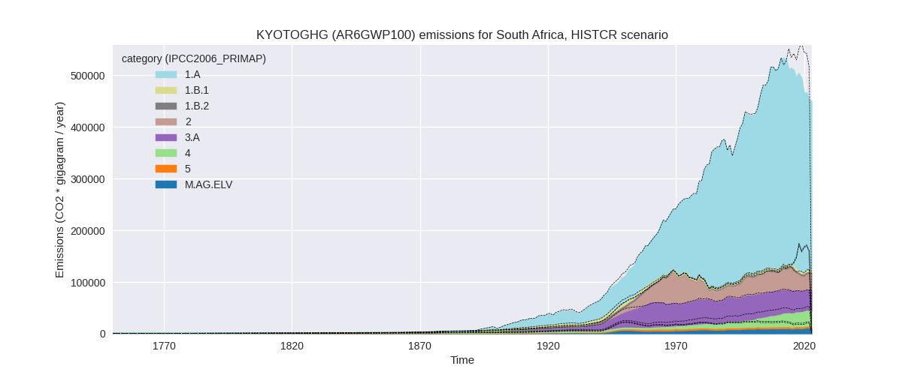
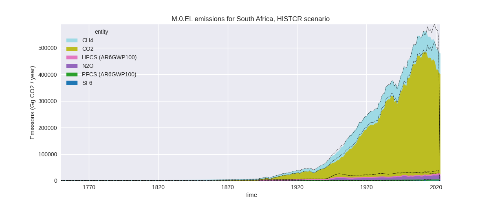
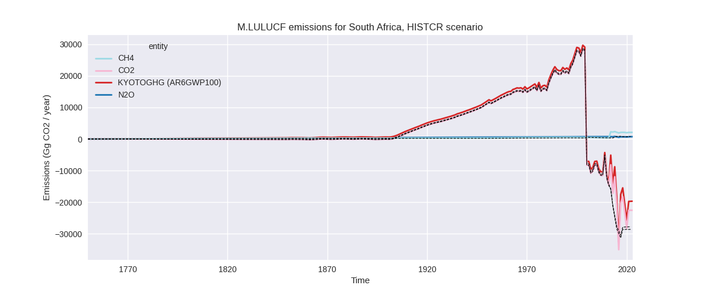
The following figures show the aggregate national total emissions
excluding LULUCF AR6GWP100 for the third party priority scenario. The
dotted linesshow the v2.5.1_final data.
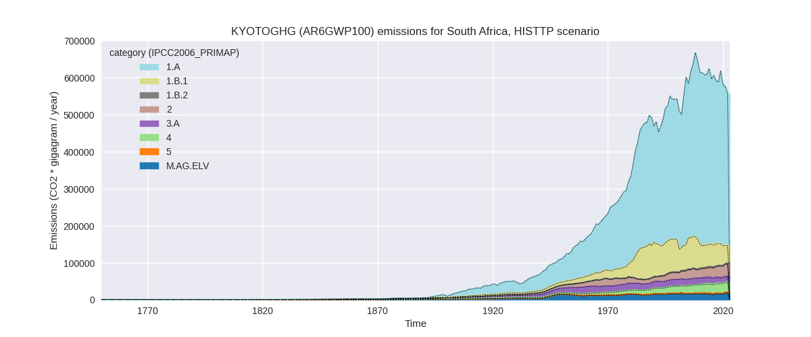
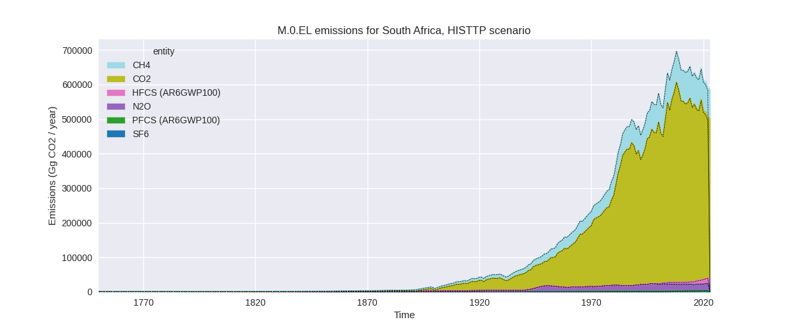
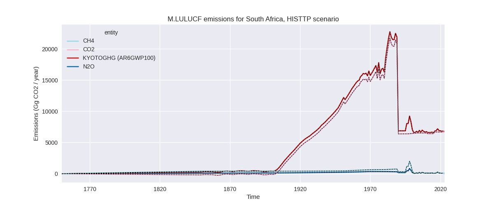
Overview over changes
In the country reported priority scenario we have the following
changes for aggregate Kyoto GHG and national total emissions excluding
LULUCF (M.0.EL):
- Emissions in 2022 have changed by -11.1%% (-59822.67 Gg CO2 / year)
- Emissions in 1990-2022 have changed by -3.1%% (-15397.94 Gg CO2 / year)
In the third party priority scenario we have the following changes
for aggregate Kyoto GHG and national total emissions excluding LULUCF
(M.0.EL):
- Emissions in 2022 have changed by 1.3%% (7820.42 Gg CO2 / year)
- Emissions in 1990-2022 have changed by 0.2%% (1237.52 Gg CO2 / year)
Most
important changes per scenario and time frame
In the country reported priority scenario the
following sector-gas combinations have the highest absolute impact on
national total KyotoGHG (AR6GWP100) emissions in 2022
(top 5):
- 1: 1.B.2, CO2 with -32852.31 Gg CO2 / year (-98.7%)
- 2: 1.A, CO2 with -24845.30 Gg CO2 / year (-7.1%)
- 3: M.AG.ELV, N2O with -12461.79 Gg CO2 / year (-65.7%)
- 4: 3.A, CH4 with 6879.28 Gg CO2 / year (22.7%)
- 5: 2, CO2 with -4840.50 Gg CO2 / year (-18.2%)
In the country reported priority scenario the
following sector-gas combinations have the highest absolute impact on
national total KyotoGHG (AR6GWP100) emissions in
1990-2022 (top 5):
- 1: M.AG.ELV, N2O with -13361.44 Gg CO2 / year (-70.0%)
- 2: 3.A, CH4 with 8832.24 Gg CO2 / year (25.5%)
- 3: 1.B.2, CO2 with -7601.97 Gg CO2 / year (-91.4%)
- 4: 1.A, CO2 with -5343.79 Gg CO2 / year (-1.6%)
- 5: 3.A, N2O with 1044.58 Gg CO2 / year (89.6%)
In the third party priority scenario the following
sector-gas combinations have the highest absolute impact on national
total KyotoGHG (AR6GWP100) emissions in 2022 (top
5):
- 1: 1.B.3, CO2 with 4222.71 Gg CO2 / year (19.4%)
- 2: 1.A, CO2 with 2888.45 Gg CO2 / year (0.7%)
- 3: 4, CH4 with 440.78 Gg CO2 / year (1.7%)
- 4: 2, HFCS (AR6GWP100) with 220.46 Gg CO2 / year (1.5%)
- 5: 1.B.3, CH4 with -156.15 Gg CO2 / year (-5.0%)
In the third party priority scenario the following
sector-gas combinations have the highest absolute impact on national
total KyotoGHG (AR6GWP100) emissions in 1990-2022 (top
5):
- 1: 1.B.3, CO2 with 651.00 Gg CO2 / year (3.7%)
- 2: 5, N2O with 271.34 Gg CO2 / year (12.3%)
- 3: 1.A, CO2 with 195.80 Gg CO2 / year (0.0%)
- 4: 4, CH4 with 125.59 Gg CO2 / year (0.6%)
- 5: 1.B.3, CH4 with -60.01 Gg CO2 / year (-2.8%)
Notes on data changes
Here we list notes explaining important emissions changes for the
country. ’' means that the following text only applies to the TP time
series, while means that it only applies to the CR scenario. Otherwise
the note applies to both scenarios.
- We have included data from the inventory underlying BUR5. It has
replaced data from BURs 2, 3, and 4. BUR2 is still used for
2000-2011
- CO2 from flaring (1.B.2) is much lower for 2022 and cumulative
emissions because a very high data point from BUR4 for 2017 has been
replaced. The value was erroneous and contained the sum of categories
1.B.3 and 1.B.2 leading to a double counting of emissions from 1.B.3
which has now been corrected. (CR)
- CO2 in 1.A is lower for most years after 2012 because of the BUR5
emissions. (CR)
- Total IPPU CO2 emissions are lower in 2022, but subsector emissions
have changed in both directions. (CR)
- Agricultural emissions differ strongly between BUR5 and the older
BURs. We have removed all agricultural data from older BURs.
- 1.B.3, CO2 emissions are 20% higher in 2022 and 3.7% higher
cumulatively because BUR5 shows constant emissions while the trend of
the preceding years was negative (CR, TP).
- Changes in sectors 4 and 5 in the TP time-series are due to the
removal of FAOSTAT data.
- Small changes in f-gas emissions because we fixed a problem with
GWPs in BUR2.
Changes by sector and gas
For each scenario and time frame the changes are displayed for all
individual sectors and all individual gases. In the sector plot we use
aggregate Kyoto GHGs in AR6GWP100. In the gas plot we usenational total
emissions without LULUCF. ## country reported scenario
2022
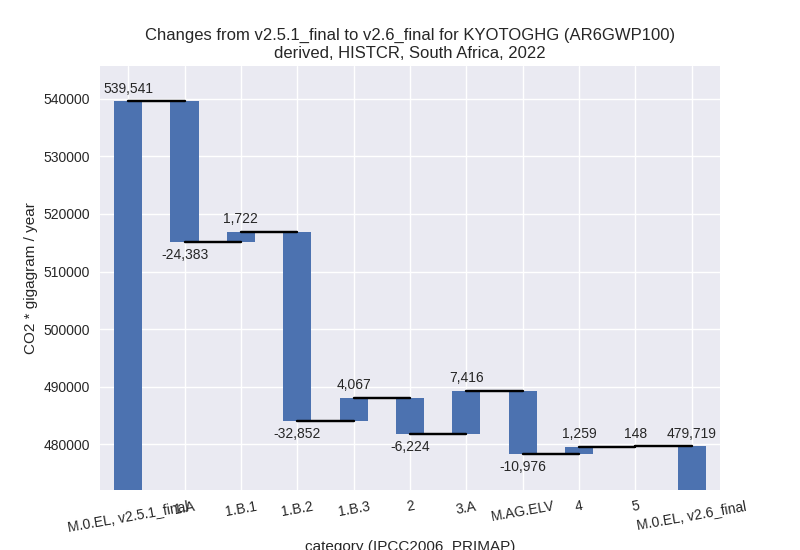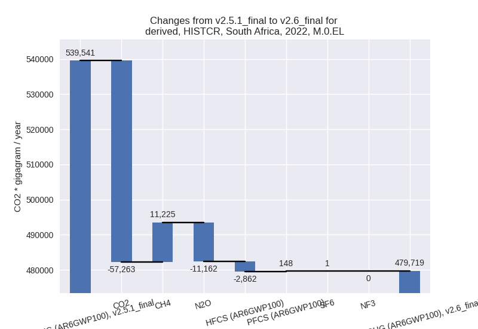
1990-2022
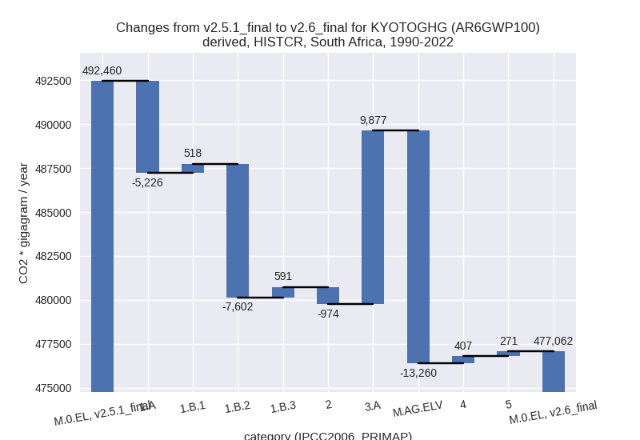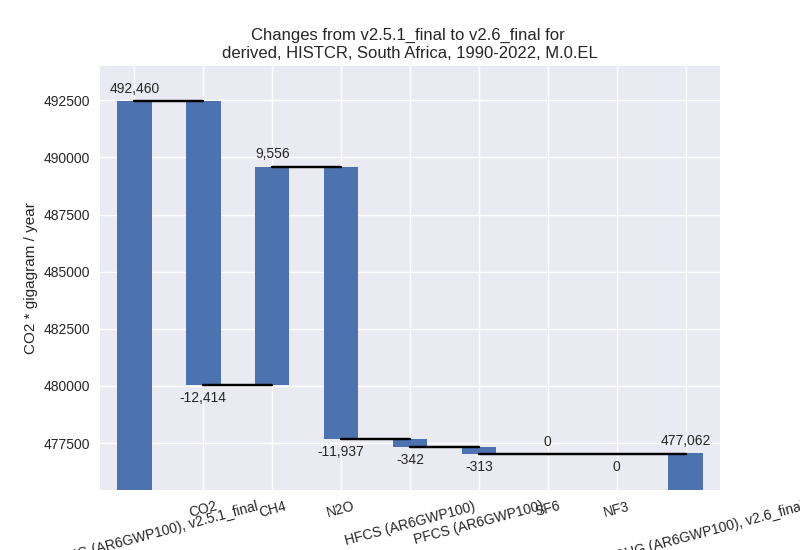
third party scenario
2022
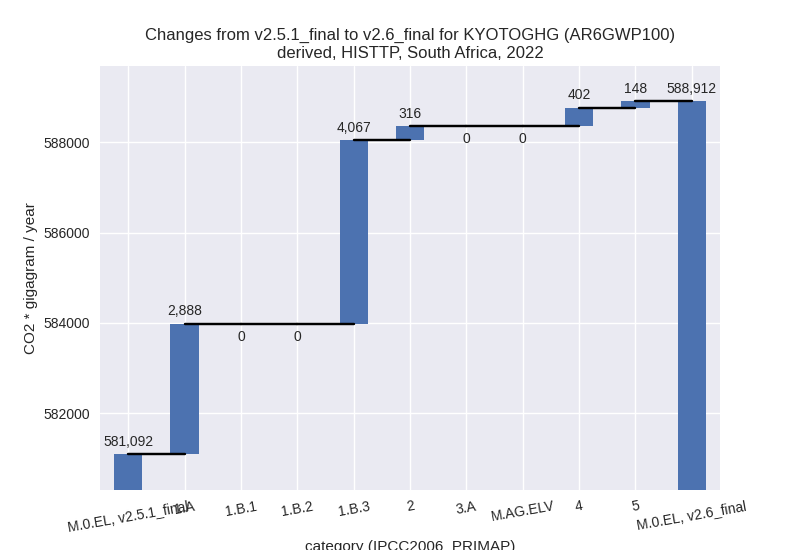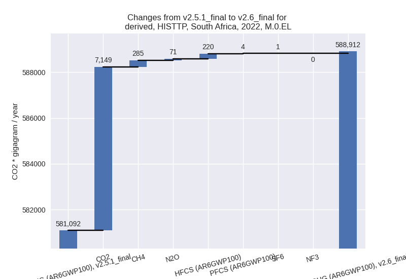
1990-2022
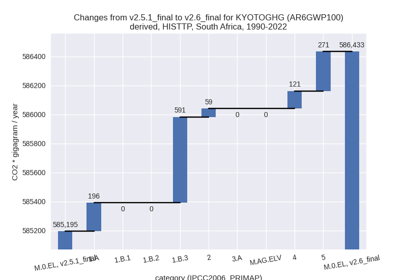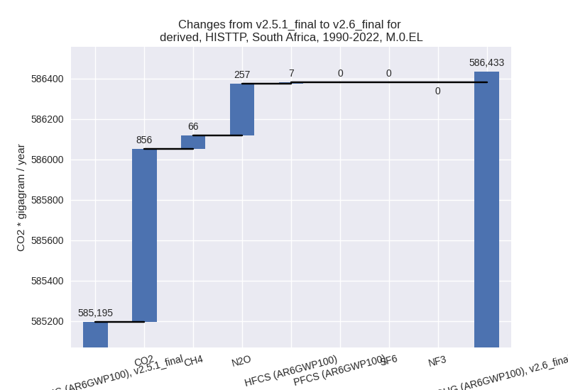
Detailed changes for the
scenarios:
country reported scenario
(HISTCR):
Most important changes
per time frame
For 2022 the following sector-gas combinations have
the highest absolute impact on national total KyotoGHG (AR6GWP100)
emissions in 2022 (top 5):
- 1: 1.B.2, CO2 with -32852.31 Gg CO2 / year (-98.7%)
- 2: 1.A, CO2 with -24845.30 Gg CO2 / year (-7.1%)
- 3: M.AG.ELV, N2O with -12461.79 Gg CO2 / year (-65.7%)
- 4: 3.A, CH4 with 6879.28 Gg CO2 / year (22.7%)
- 5: 2, CO2 with -4840.50 Gg CO2 / year (-18.2%)
For 1990-2022 the following sector-gas combinations
have the highest absolute impact on national total KyotoGHG (AR6GWP100)
emissions in 1990-2022 (top 5):
- 1: M.AG.ELV, N2O with -13361.44 Gg CO2 / year (-70.0%)
- 2: 3.A, CH4 with 8832.24 Gg CO2 / year (25.5%)
- 3: 1.B.2, CO2 with -7601.97 Gg CO2 / year (-91.4%)
- 4: 1.A, CO2 with -5343.79 Gg CO2 / year (-1.6%)
- 5: 3.A, N2O with 1044.58 Gg CO2 / year (89.6%)
Changes in the main sectors for aggregate KyotoGHG (AR6GWP100)
are
- 1: Total sectoral emissions in 2022 are 363589.49
Gg CO2 / year which is 75.8% of M.0.EL emissions. 2022 Emissions have
changed by -12.4% (-51446.59 Gg CO2
/ year). 1990-2022 Emissions have changed by -3.1% (-11719.31 Gg CO2 / year). For 2022
the changes per gas
are:
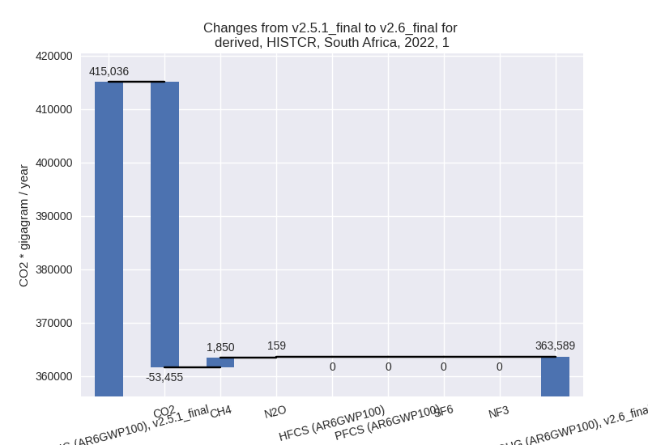
For 1990-2022 the changes per gas
are:
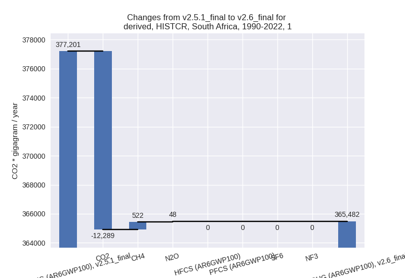
The changes come from the following subsectors:
- 1.A: Total sectoral emissions in 2022 are 330076.34
Gg CO2 / year which is 98.6% of category 1 emissions. 2022 Emissions
have changed by -6.9% (-24382.98 Gg
CO2 / year). 1990-2022 Emissions have changed by -1.5% (-5226.33 Gg CO2 / year). For 2022
the changes per gas
are:
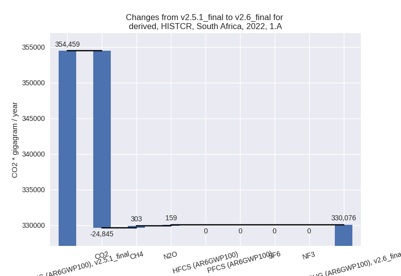
There is no subsector information available in PRIMAP-hist.
- 1.B.1: Total sectoral emissions in 2022 are 3551.58
Gg CO2 / year which is 1.1% of category 1 emissions. 2022 Emissions have
changed by 94.1% (1722.15 Gg CO2 /
year). 1990-2022 Emissions have changed by 21.6% (518.00 Gg CO2 / year). For 2022 the
changes per gas
are:
For 1990-2022 the changes per gas
are:
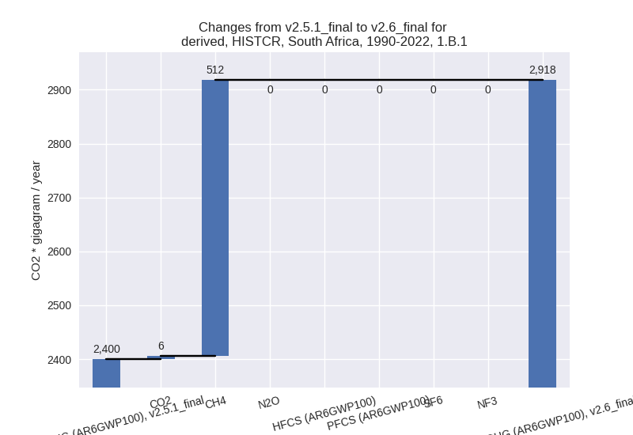
There is no subsector information available in PRIMAP-hist.
- 1.B.2: Total sectoral emissions in 2022 are 1055.41
Gg CO2 / year which is 0.3% of category 1 emissions. 2022 Emissions have
changed by -96.9% (-32852.31 Gg CO2
/ year). 1990-2022 Emissions have changed by -78.7% (-7601.97 Gg CO2 / year). For 2022
the changes per gas
are:
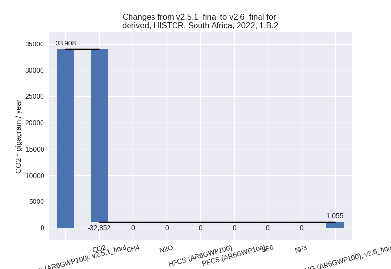
For 1990-2022 the changes per gas
are:
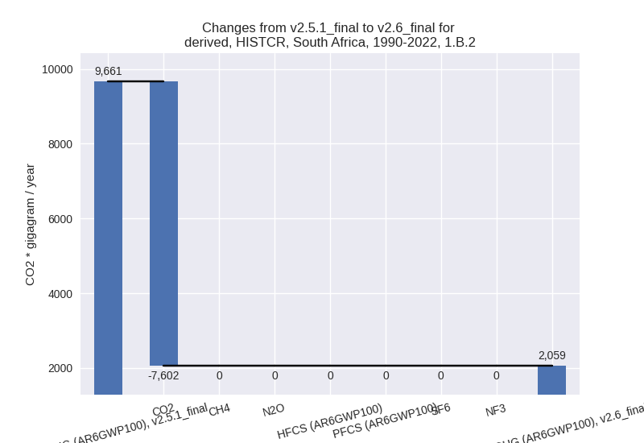
There is no subsector information available in PRIMAP-hist.
- 2: Total sectoral emissions in 2022 are 33607.32 Gg
CO2 / year which is 7.0% of M.0.EL emissions. 2022 Emissions have
changed by -15.6% (-6223.78 Gg CO2 /
year). 1990-2022 Emissions have changed by -2.7% (-974.40 Gg CO2 / year). For 2022
the changes per gas
are:
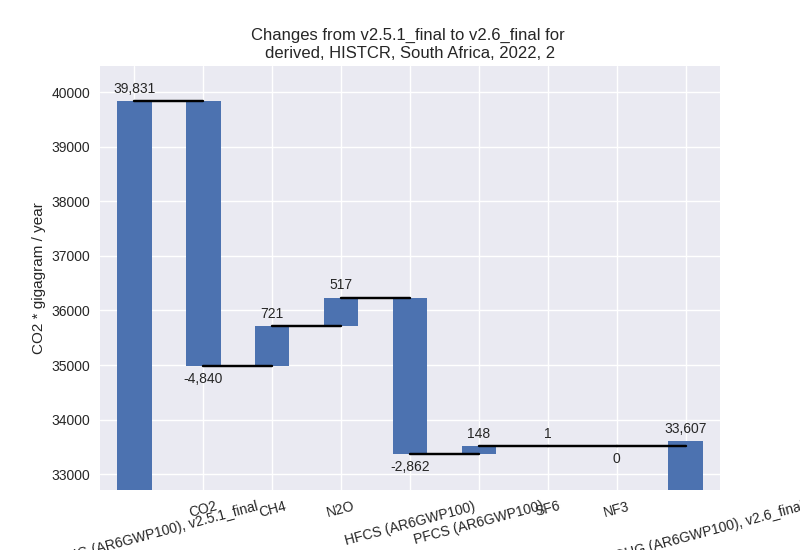
For 1990-2022 the changes per gas
are:
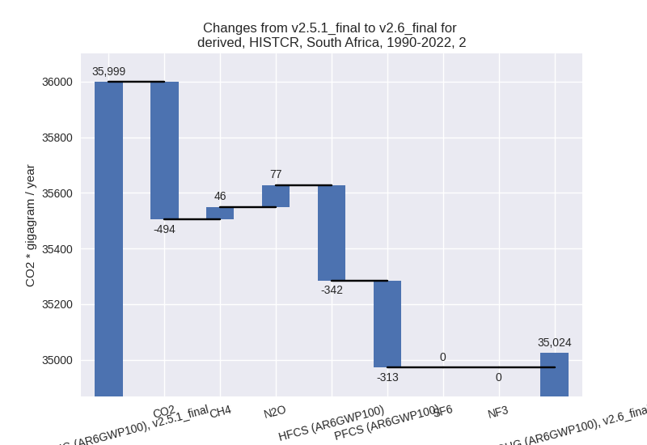
- M.AG: Total sectoral emissions in 2022 are 49009.25
Gg CO2 / year which is 10.2% of M.0.EL emissions. 2022 Emissions have
changed by -6.8% (-3559.39 Gg CO2 /
year). 1990-2022 Emissions have changed by -6.0% (-3382.96 Gg CO2 / year). For 2022
the changes per gas
are:
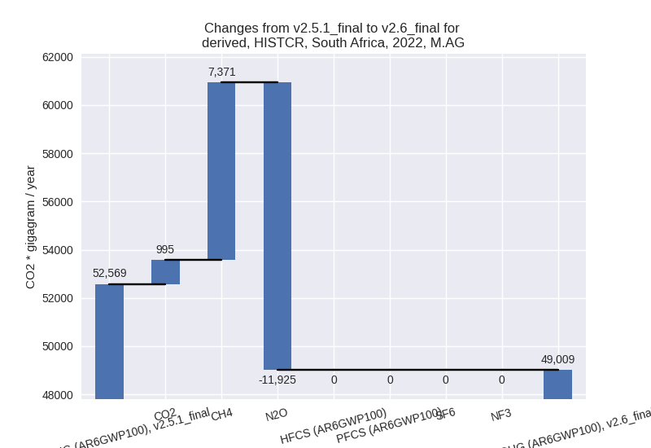
For 1990-2022 the changes per gas
are:
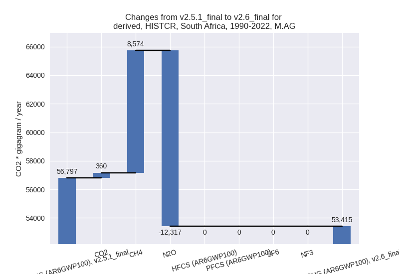
The changes come from the following subsectors:
- 3.A: Total sectoral emissions in 2022 are 39433.79
Gg CO2 / year which is 80.5% of category M.AG emissions. 2022 Emissions
have changed by 23.2% (7416.31 Gg
CO2 / year). 1990-2022 Emissions have changed by 27.5% (9876.82 Gg CO2 / year). For 2022
the changes per gas
are:
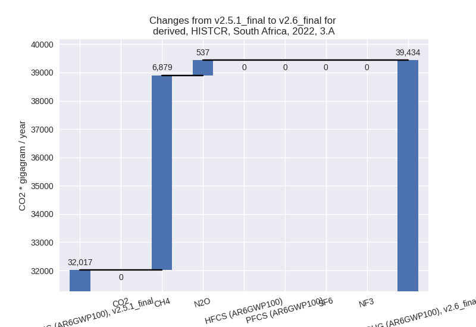
For 1990-2022 the changes per gas
are:
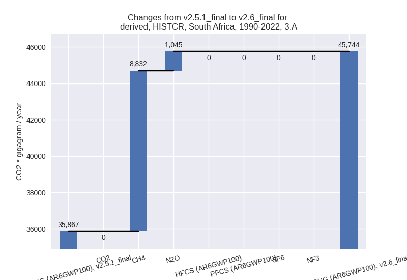
There is no subsector information available in PRIMAP-hist.
- M.AG.ELV: Total sectoral emissions in 2022 are
9575.46 Gg CO2 / year which is 19.5% of category M.AG emissions. 2022
Emissions have changed by -53.4%
(-10975.70 Gg CO2 / year). 1990-2022 Emissions have changed by -63.4% (-13259.78 Gg CO2 / year). For 2022
the changes per gas
are:
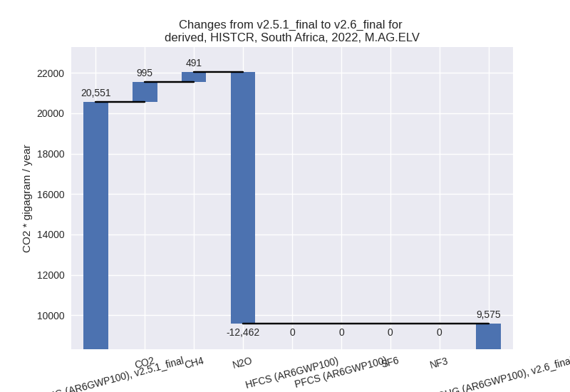
For 1990-2022 the changes per gas
are:
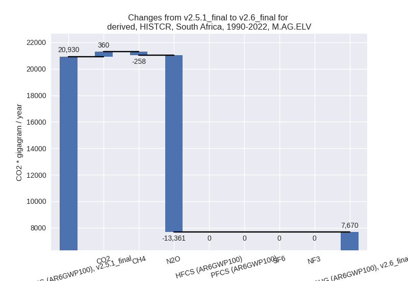
There is no subsector information available in PRIMAP-hist.
- 4: Total sectoral emissions in 2022 are 30911.60 Gg
CO2 / year which is 6.4% of M.0.EL emissions. 2022 Emissions have
changed by 4.2% (1259.46 Gg CO2 /
year). 1990-2022 Emissions have changed by 2.0% (407.39 Gg CO2 / year). For 2022 the
changes per gas
are:
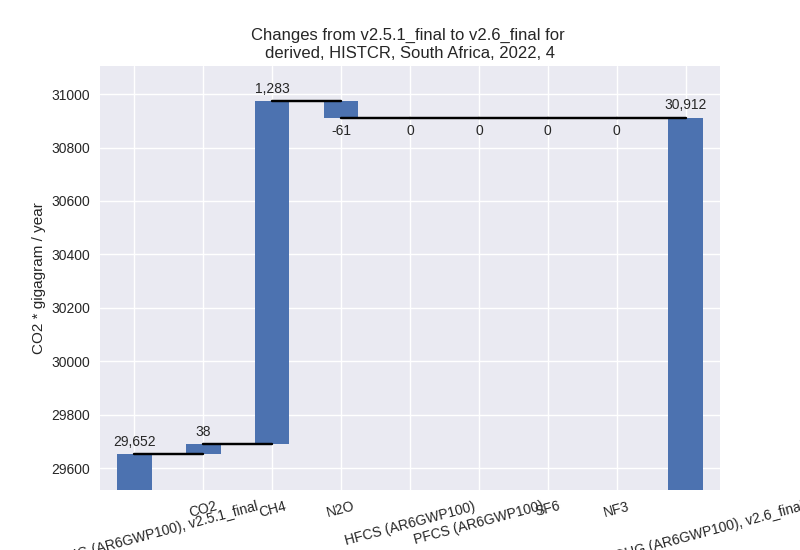
For 1990-2022 the changes per gas
are:
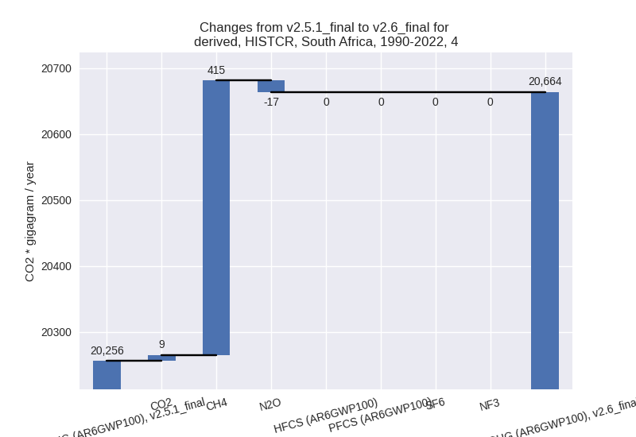
- 5: Total sectoral emissions in 2022 are 2601.06 Gg
CO2 / year which is 0.5% of M.0.EL emissions. 2022 Emissions have
changed by 6.0% (147.62 Gg CO2 /
year). 1990-2022 Emissions have changed by 12.3% (271.34 Gg CO2 / year). For 2022 the
changes per gas
are:
For 1990-2022 the changes per gas
are:
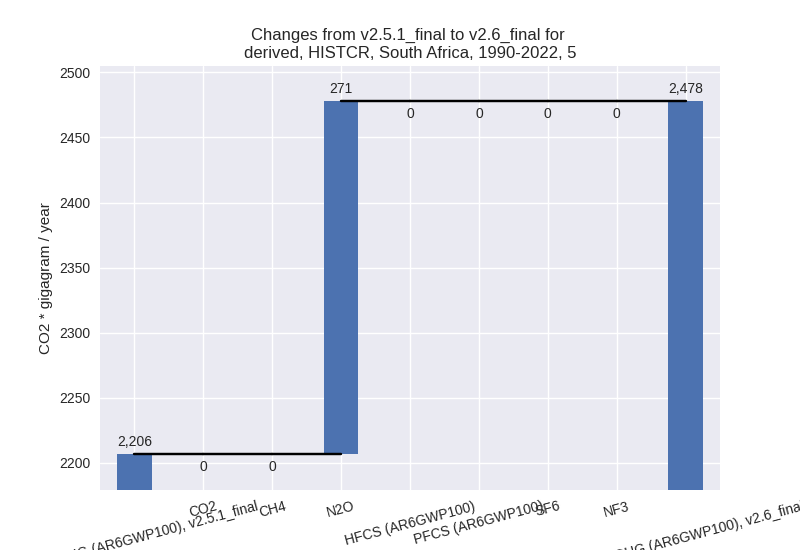
third party scenario (HISTTP):
Most important changes
per time frame
For 2022 the following sector-gas combinations have
the highest absolute impact on national total KyotoGHG (AR6GWP100)
emissions in 2022 (top 5):
- 1: 1.B.3, CO2 with 4222.71 Gg CO2 / year (19.4%)
- 2: 1.A, CO2 with 2888.45 Gg CO2 / year (0.7%)
- 3: 4, CH4 with 440.78 Gg CO2 / year (1.7%)
- 4: 2, HFCS (AR6GWP100) with 220.46 Gg CO2 / year (1.5%)
- 5: 1.B.3, CH4 with -156.15 Gg CO2 / year (-5.0%)
For 1990-2022 the following sector-gas combinations
have the highest absolute impact on national total KyotoGHG (AR6GWP100)
emissions in 1990-2022 (top 5):
- 1: 1.B.3, CO2 with 651.00 Gg CO2 / year (3.7%)
- 2: 5, N2O with 271.34 Gg CO2 / year (12.3%)
- 3: 1.A, CO2 with 195.80 Gg CO2 / year (0.0%)
- 4: 4, CH4 with 125.59 Gg CO2 / year (0.6%)
- 5: 1.B.3, CH4 with -60.01 Gg CO2 / year (-2.8%)
Changes in the main sectors for aggregate KyotoGHG (AR6GWP100)
are
- 1: Total sectoral emissions in 2022 are 490680.16
Gg CO2 / year which is 83.3% of M.0.EL emissions. 2022 Emissions have
changed by 1.4% (6955.01 Gg CO2 /
year). 1990-2022 Emissions have changed by 0.2% (786.79 Gg CO2 / year).
- 2: Total sectoral emissions in 2022 are 34641.28 Gg
CO2 / year which is 5.9% of M.0.EL emissions. 2022 Emissions have
changed by 0.9% (316.26 Gg CO2 /
year). 1990-2022 Emissions have changed by 0.3% (58.77 Gg CO2 / year).
- M.AG: Total sectoral emissions in 2022 are 33432.03
Gg CO2 / year which is 5.7% of M.0.EL emissions. 2022 Emissions have
changed by 0.0% (0.00 Gg CO2 /
year). 1990-2022 Emissions have changed by 0.0% (0.00 Gg CO2 / year).
- 4: Total sectoral emissions in 2022 are 27557.73 Gg
CO2 / year which is 4.7% of M.0.EL emissions. 2022 Emissions have
changed by 1.5% (401.53 Gg CO2 /
year). 1990-2022 Emissions have changed by 0.6% (120.62 Gg CO2 / year).
- 5: Total sectoral emissions in 2022 are 2601.06 Gg
CO2 / year which is 0.4% of M.0.EL emissions. 2022 Emissions have
changed by 6.0% (147.62 Gg CO2 /
year). 1990-2022 Emissions have changed by 12.3% (271.34 Gg CO2 / year). For 2022 the
changes per gas
are:
For 1990-2022 the changes per gas
are: